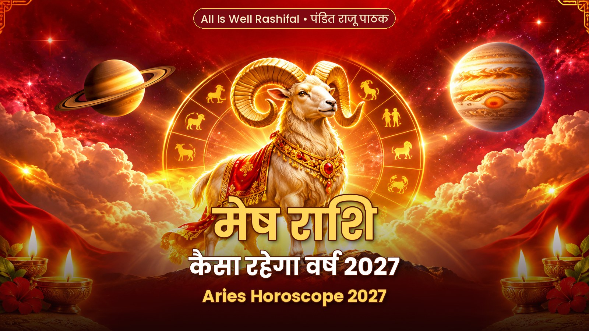

मेष राशिफल 2027: कैसा रहेगा मेष राशि के लिए साल 2027 – साढ़ेसाती, करियर, पैसा, शादी और महीने-दर-महीने पूरा भविष्यफल | Mesh Rashifal 2027
मेष राशि के जातकों के लिए साल 2027 दो रंगों वाला साल है। एक तरफ़ शनि देव 3 जून को आपकी ही राशि में आकर साढ़ेसाती का सबसे अहम चरण शुरू करेंगे, जो धैर्य और मेहनत की परीक्षा लेगा। दूसरी तरफ़ देवगुरु बृहस्पति साल के बीच में आपके पाँचवें भाव में आकर भाग्य, संतान, पढ़ाई और प्रेम में बड़ा सहारा देंगे। यानी 2027 में आपको मेहनत तो ज़्यादा करनी पड़ेगी, पर उसका फल भी पक्का मिलेगा – बस जल्दबाज़ी और ग़ुस्से से बचना होगा। आइए विस्तार से समझते हैं कि यह साल आपके लिए क्या लेकर आ रहा है।
मेष राशि 2027: एक नज़र में
• सबसे अच्छा समय: 26 जून से 26 नवंबर 2027 (गुरु पाँचवें भाव में)
• सावधानी का समय: 3 जून से 20 अक्टूबर 2027 (शनि आपकी राशि पर) और 8 अक्टूबर से 18 नवंबर (मंगल आठवें भाव में)
• करियर: राहु दसवें भाव में – बड़ी महत्वाकांक्षा, बदलाव और ऊँचे पद के मौके
• घर-परिवार: केतु चौथे भाव में – माता की सेहत और घर की शांति पर ध्यान
• साढ़ेसाती: जारी है – साल का पहला हिस्सा पहला चरण, जून से अक्टूबर बीच का चरण
2027 में ग्रहों की चाल (पंचांग के अनुसार)
| ग्रह | 2027 में कब, कहाँ |
|---|---|
| शनि | साल की शुरुआत मीन में → 3 जून को मेष में → 9 अगस्त से वक्री → 20 अक्टूबर को फिर मीन में → 24 दिसंबर को मार्गी |
| गुरु | साल की शुरुआत सिंह में (वक्री) → 25 जनवरी को कर्क (उच्च) में → 13 अप्रैल को मार्गी → 26 जून को सिंह में → 26 नवंबर को कन्या में |
| राहु | पूरे साल मकर में (5 दिसंबर 2026 से) |
| केतु | पूरे साल कर्क में |
| मंगल | सिंह (10 जनवरी से वक्री) → कर्क 10 मार्च → मार्गी 1 अप्रैल → सिंह 26 अप्रैल → कन्या 5 जुलाई → तुला 24 अगस्त → वृश्चिक 8 अक्टूबर → धनु 18 नवंबर → मकर 27 दिसंबर |
अब देखते हैं कि ये ग्रह मेष राशि के किस भाव में रहकर क्या फल देंगे।
शनि की साढ़ेसाती 2027 – मेष राशि के लिए सबसे ज़रूरी बात
जनवरी से 2 जून तक शनि आपके बारहवें भाव (मीन) में रहेंगे। यह साढ़ेसाती का पहला चरण है – ख़र्च बढ़ना, नींद कम होना, दूर की यात्राएँ या घर-शहर बदलने का मन बनना इस समय आम बात है। विदेश से जुड़े काम करने वालों को इसी समय फ़ायदा भी मिलता है।
3 जून 2027 से शनि आपकी राशि में आएँगे। इसे साढ़ेसाती का बीच का चरण कहते हैं। इस समय शरीर में थकान, मन पर बोझ और काम में देरी महसूस हो सकती है। लोग आपकी मेहनत को तुरंत नहीं पहचानेंगे। पर यही वह समय है जब शनि आपको अंदर से मज़बूत बनाते हैं। 9 अगस्त से शनि वक्री होंगे और 20 अक्टूबर को वापस मीन में चले जाएँगे, तब थोड़ी राहत मिलेगी। फ़रवरी 2028 में शनि फिर मेष में आएँगे, इसलिए 2027 को आने वाले समय की तैयारी का साल मानें।
शनि के समय क्या करें: समय की पाबंदी रखें, अपने से नीचे काम करने वालों से अच्छा व्यवहार करें, क़र्ज़ लेकर बड़ा जोखिम न लें, और हर शनिवार पीपल के नीचे सरसों के तेल का दीपक जलाएँ।
करियर और नौकरी 2027
राहु पूरे साल आपके दसवें भाव (कर्म भाव) में रहेगा। इसका मतलब है कि आपके अंदर आगे बढ़ने की भूख बहुत तेज़ रहेगी। नौकरी में बड़ा पद, नई कंपनी, सरकारी काम या राजनीति से जुड़ने के मौके बनेंगे। कई मेष राशि वालों की नौकरी बदल सकती है या ज़िम्मेदारी अचानक बढ़ सकती है।
पर राहु के साथ सावधानी ज़रूरी है – दफ़्तर की राजनीति, बॉस से टकराव और शॉर्टकट से बचें। जून से अक्टूबर के बीच शनि के कारण काम का बोझ बढ़ेगा और प्रमोशन में देरी लग सकती है, पर घबराएँ नहीं – जो मेहनत आप इस समय करेंगे, उसका फल साल के आख़िर और 2028 में मिलेगा। 27 दिसंबर को मंगल अपनी उच्च राशि मकर में आपके दसवें भाव में आएँगे – साल का अंत करियर के लिए बहुत मज़बूत रहेगा।
सरकारी नौकरी की तैयारी करने वालों के लिए: 26 जून से नवंबर तक गुरु पाँचवें भाव में रहकर पढ़ाई और परीक्षा में सफलता के योग बनाएँगे।
व्यापार और कारोबार 2027
व्यापारियों के लिए साल की शुरुआत धीमी रहेगी। जनवरी से मार्च तक मंगल वक्री होकर पाँचवें भाव में रहेंगे, इसलिए शेयर, सट्टे या जल्दबाज़ी वाले निवेश से बचें। 25 जनवरी से 26 जून तक गुरु चौथे भाव (कर्क) में रहकर ज़मीन-जायदाद, वाहन और घर से जुड़े कारोबार में लाभ देंगे। साझेदारी में काम करने वाले 24 अगस्त से 8 अक्टूबर (मंगल सातवें भाव में) के बीच पार्टनर से विवाद न होने दें। नया काम शुरू करना हो तो जुलाई से अक्टूबर का समय बेहतर है।
धन और आर्थिक स्थिति 2027
पैसे के मामले में 2027 "आमदनी ठीक, ख़र्च ज़्यादा" वाला साल है। साढ़ेसाती के कारण अस्पताल, यात्रा, घर की मरम्मत या परिवार पर ख़र्च बढ़ सकता है। इसलिए साल की शुरुआत से ही बचत की आदत डालें। 26 जून के बाद गुरु की पाँचवें भाव से ग्यारहवें भाव (लाभ) पर दृष्टि रहेगी – रुका हुआ पैसा मिलने और आय के नए रास्ते खुलने के योग बनेंगे। 8 अक्टूबर से 18 नवंबर के बीच किसी को बड़ी रक़म उधार न दें और किसी के लिए ज़मानत न लें।
प्रेम संबंध 2027
प्रेम के मामले में 2027 मेष राशि वालों के लिए अच्छा है, ख़ासकर 26 जून से 26 नवंबर के बीच, जब गुरु आपके पाँचवें भाव (प्रेम भाव) में रहेंगे। इस समय सच्चा और गंभीर रिश्ता बन सकता है, पुराने रिश्ते में मिठास आएगी और कई लोगों का प्रेम विवाह की ओर बढ़ेगा। साल की शुरुआत में मंगल वक्री होकर पाँचवें भाव में रहेंगे, तब ग़ुस्से और ज़िद से रिश्ते में दरार आ सकती है – इस समय धैर्य रखें।
विवाह और वैवाहिक जीवन 2027
अविवाहित मेष राशि वालों के लिए जून से नवंबर का समय रिश्ता पक्का होने के लिए अच्छा है, क्योंकि गुरु पाँचवें भाव से आपके लग्न (पहले भाव) और ग्यारहवें भाव को देखेंगे। विवाहित लोगों के लिए शनि का आपकी राशि पर होना कभी-कभी जीवनसाथी से दूरी या रूखापन ला सकता है – समय दें, बात करें और छोटी बातों को बड़ा न बनाएँ। 24 अगस्त से 8 अक्टूबर तक मंगल सातवें भाव में रहेंगे, इस समय बहस से बचें।
परिवार और घर 2027
केतु पूरे साल आपके चौथे भाव (घर, माता, सुख) में रहेगा। घर में कुछ खालीपन या मन उचाट रहने की स्थिति बन सकती है, और माता की सेहत पर ध्यान देना ज़रूरी होगा। अच्छी बात यह है कि 25 जनवरी से 26 जून तक गुरु भी चौथे भाव में रहेंगे – इस दौरान घर ख़रीदने, घर की मरम्मत या नया वाहन लेने के अच्छे योग हैं। अगर घर लेना है, तो इसी समय को प्राथमिकता दें।
सेहत 2027
शनि आपकी राशि पर आने से जून से अक्टूबर तक थकान, जोड़ों का दर्द, कमर दर्द या पुरानी बीमारी उभर सकती है। मंगल 8 अक्टूबर से 18 नवंबर तक आठवें भाव में रहेंगे – इस समय वाहन ध्यान से चलाएँ, चोट-चपेट और ऑपरेशन जैसी स्थिति से सावधान रहें। रोज़ सुबह टहलना, योग और समय पर सोना इस साल आपकी सबसे बड़ी दवा है। सिर और रक्तचाप की नियमित जाँच कराएँ।
पढ़ाई और विद्यार्थी 2027
विद्यार्थियों के लिए 2027 अच्छा है। 26 जून से 26 नवंबर तक गुरु पाँचवें भाव (विद्या भाव) में रहकर एकाग्रता, अच्छे अंक और प्रतियोगी परीक्षा में सफलता के योग बनाएँगे। साल की शुरुआत में मन भटक सकता है, इसलिए जनवरी से मार्च तक मोबाइल और ग़लत संगत से दूर रहें। विदेश में पढ़ाई का सपना देखने वालों को साल के पहले हिस्से में मौका मिल सकता है।
मेष राशि 2027: महीने-दर-महीने भविष्यफल
जनवरी: मंगल वक्री और गुरु 25 तारीख़ तक पाँचवें भाव में – फ़ैसलों में जल्दबाज़ी न करें, संतान की चिंता रह सकती है।
फ़रवरी: गुरु चौथे भाव में – घर-परिवार में सुकून, प्रॉपर्टी की बात आगे बढ़ेगी।
मार्च: 10 मार्च से मंगल चौथे भाव में – घर में बहस से बचें, माता की सेहत का ध्यान।
अप्रैल: 13 अप्रैल को गुरु मार्गी – रुके काम आगे बढ़ेंगे; 26 अप्रैल से मंगल पाँचवें भाव में, जोश बढ़ेगा।
मई: साढ़ेसाती का पहला चरण अंतिम दौर में – ख़र्च पर नियंत्रण रखें, यात्रा के योग।
जून: 3 जून को शनि आपकी राशि में और 26 जून को गुरु पाँचवें भाव में – जिम्मेदारी बढ़ेगी, पर भाग्य भी साथ देगा।
जुलाई: 5 जुलाई से मंगल छठे भाव में – विरोधियों पर जीत, कोर्ट-कचहरी में राहत, नौकरी में अच्छा प्रदर्शन।
अगस्त: 9 अगस्त से शनि वक्री – पुराने अधूरे काम सामने आएँगे; 24 अगस्त से मंगल सातवें भाव में, पार्टनर से बहस न करें।
सितंबर: प्रेम और संतान के लिए अच्छा महीना, गुरु की कृपा बनी रहेगी।
अक्टूबर: 20 अक्टूबर को शनि वापस मीन में – मन का बोझ हल्का होगा; 8 अक्टूबर से मंगल आठवें भाव में, सेहत और वाहन का ध्यान।
नवंबर: 18 नवंबर से मंगल नौवें भाव में – भाग्य का साथ, धार्मिक यात्रा; 26 नवंबर को गुरु छठे भाव में।
दिसंबर: 27 दिसंबर को मंगल उच्च होकर दसवें भाव में – करियर में बड़ी उपलब्धि के योग, साल का शानदार अंत।
मेष राशि 2027: शुभ अंक, रंग और दिन
• शुभ अंक: 9 और 1
• शुभ रंग: लाल, केसरिया और सुनहरा
• शुभ दिन: मंगलवार और रविवार
• इष्ट देव: हनुमान जी और भगवान शिव
मेष राशि 2027 के उपाय
• हर मंगलवार हनुमान चालीसा पढ़ें और हनुमान जी को सिंदूर-चोला चढ़ाएँ।
• हर शनिवार शाम पीपल के नीचे सरसों के तेल का दीपक जलाएँ – साढ़ेसाती में यह सबसे असरदार उपाय है।
• "ॐ शं शनैश्चराय नमः" का रोज़ 108 बार जाप करें।
• गुरुवार को पीली चीज़ें (चने की दाल, हल्दी, केला) दान करें – गुरु की कृपा बढ़ेगी।
• राहु के लिए शनिवार को कुत्तों को रोटी खिलाएँ और काले तिल दान करें।
• माता की सेवा करें और घर में रोज़ शाम को दीपक जलाएँ – केतु शांत रहेगा।
• कोई भी रत्न (मूंगा, नीलम, गोमेद) बिना कुंडली दिखाए न पहनें।
2027 में मेष राशि वाले क्या करें, क्या न करें
क्या करें: मेहनत और अनुशासन, बचत, बड़ों का सम्मान, सेहत की नियमित जाँच, जून से नवंबर के बीच पढ़ाई, प्रेम और निवेश के अच्छे फ़ैसले।
क्या न करें: ग़ुस्से में नौकरी छोड़ना, बिना सोचे बड़ा क़र्ज़, शेयर-सट्टे में जोखिम, जीवनसाथी से बहस, और अक्टूबर-नवंबर में वाहन चलाते समय लापरवाही।
ज़रूरी बात
यह राशिफल चंद्र राशि (मेष) के आधार पर सामान्य फल है। आपकी जन्म-कुंडली में लग्न, दशा-अंतर्दशा और ग्रहों की स्थिति के अनुसार परिणाम बदल सकते हैं। साल 2027 का सटीक और व्यक्तिगत भविष्यफल जानने के लिए पंडित राजू पाठक से अपनी कुंडली बनवाएँ।
अक्सर पूछे जाने वाले सवाल (FAQ)
मेष राशि के लिए 2027 कैसा रहेगा?
2027 मेष राशि के लिए मेहनत और भाग्य, दोनों का साल है। 3 जून से शनि आपकी राशि पर आएँगे, जिससे ज़िम्मेदारियाँ बढ़ेंगी, पर 26 जून से 26 नवंबर तक गुरु पाँचवें भाव में रहकर पढ़ाई, प्रेम, संतान और आय में अच्छे परिणाम देंगे।
क्या 2027 में मेष राशि पर साढ़ेसाती है?
हाँ। साल के पहले हिस्से में साढ़ेसाती का पहला चरण है, और 3 जून से 20 अक्टूबर 2027 तक शनि आपकी राशि पर रहकर बीच का चरण चलाएँगे। 23 फ़रवरी 2028 से शनि फिर मेष में आएँगे।
मेष राशि को 2027 में नौकरी कब मिलेगी?
राहु पूरे साल दसवें भाव में करियर में बदलाव के योग बना रहा है। जुलाई (मंगल छठे भाव में) और दिसंबर का आख़िरी हफ़्ता (मंगल उच्च होकर दसवें भाव में) नौकरी और प्रमोशन के लिए सबसे अच्छे समय हैं।
मेष राशि की शादी 2027 में कब होगी?
अविवाहितों के लिए 26 जून से 26 नवंबर 2027 का समय सबसे अनुकूल है, जब गुरु पाँचवें भाव से लग्न को देखेंगे। सटीक समय कुंडली के सातवें भाव और दशा से तय होता है।
मेष राशि 2027 में घर कब ख़रीदें?
25 जनवरी से 26 जून 2027 के बीच गुरु चौथे भाव में रहेंगे, जो घर, ज़मीन और वाहन ख़रीदने के लिए सबसे अच्छा समय है।
मेष राशि का शुभ अंक और रंग 2027 में क्या है?
शुभ अंक 9 और 1, और शुभ रंग लाल, केसरिया और सुनहरा है।
📖 ये भी पढ़ें
📅 रोज़ का हाल: आज का मेष राशिफल पढ़ें →